Erros comum¶
Aqui estão listados os erros mais frequentes que aparecem na hora de programar a placa SAME70-XPLD.
USB errada¶
Muitas das vezes que o AtmelStudio não reconhece a placa é porque foi ligada na porta USB errada. O Kit de desenvolvimento possui duas portas USB, uma para programar o microcontrolador e outra para conectar dispositivos no microcontrolador (host/device).
Este é o erro mais comum!
PORTA USB CERTA
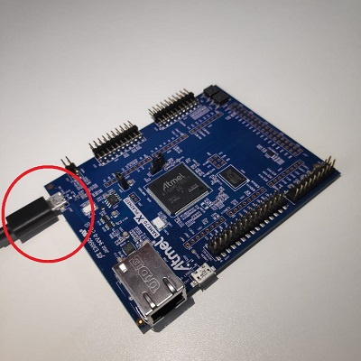
PORTA USB ERRADA
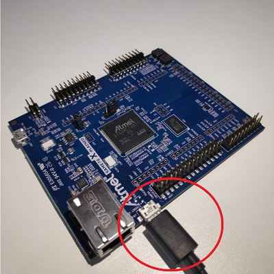
Chip Errado¶
Configurando versão
Para alterar a versão do chip dentro do Atmel Studio basta realizar os seguintes passos:
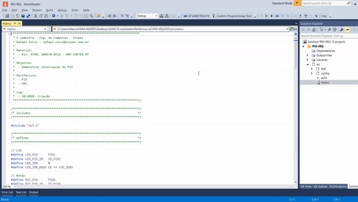
1 - Clique no botão Device:
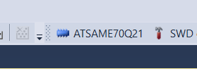
2 - Clique no botão Change Device:
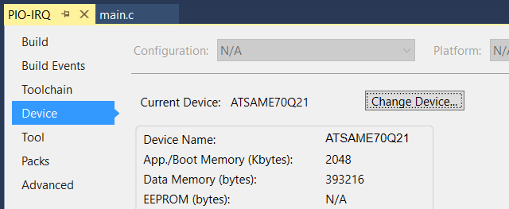
3 - Selecione a versão correta do chip e clique em OK, agora seu gravador(EDBG) deverá ser reconhecido pela IDE:
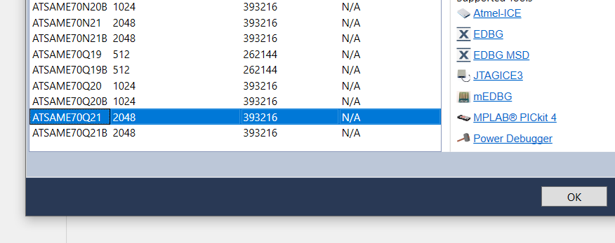
4 - Dentro da aba Tools, vá até o menu drop-down Select debugger/programmer e selecione o seu gravador, no caso desse gif:
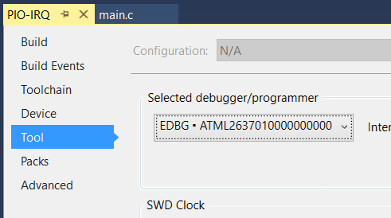
As placas SAME70-XPLD possuem o Microcontrolador ATSAME70Q21, contudo ele possui 2 versões, a ATSAME70Q21 (Rev. A) e a versão ATSAME70Q21**B** (Rev. B). Caso a versão não esteja correta na IDE Atmel Studio, o código a ser transferido para a placa pode não ser gravado corretamente e pode até nem ser reconhecida pela IDE.
Os exemplos são todos configurados para a versão B da placa, se você possuir a A deve fazer a configuração a seguir.
Para saber a versão do seu chip, basta olhar o código impresso em cima do CI do Microcontrolador:
| REV. A | REV B |
|---|---|
 |
 |
Info
É bem difícil ver essas letras.
Jumpers¶
Erase
Em algumas situações é necessário que a memória seja apagada (zerada), para isso siga os passos a seguir:
- Energize a placa
- Coloque o Jumper
- Retire o cabo USB
- Coloque o cabo USB
- Retire o jumper
- Retire e coloque o cabo USB novamente

O Kit possui dois jumpers: Current Measurement e Erase. O primeiro deve estar conectado e o segundo não.
-
Current Measurement: Serve para medirmos a corrente que vai para o uC a fim de aferir a potência elétrica que está sendo consumida.
-
Erase: Serve para apagar a memória de programa do uC.
Limpando build¶
Dentro do AtmelStudio clique no menubar: Build 
Clean Solution. Isso irá remover todos os arquivos da compilação anterior das pastas.
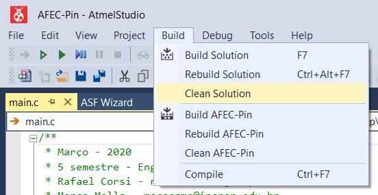
Instalando Terminal Window no Atmel Studio¶
Instalando
-
Clique em
Tools Extensions and Update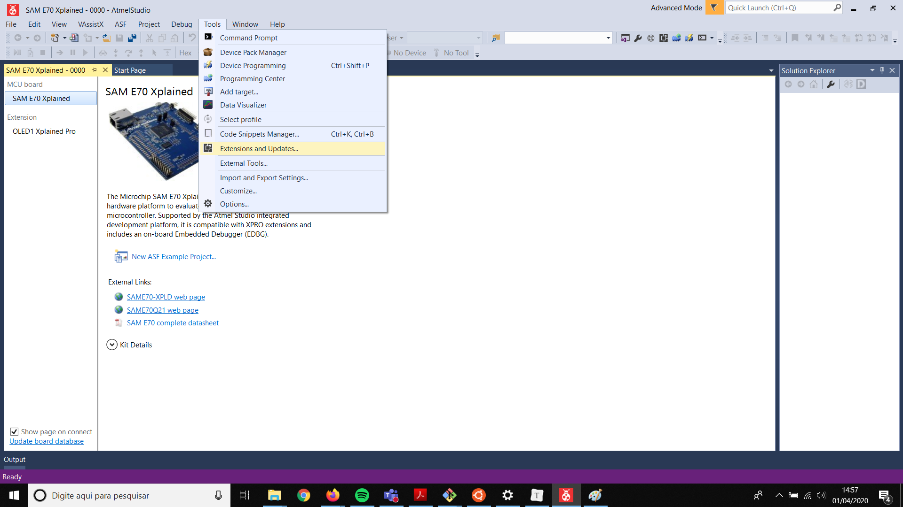
-
Pesquise Terminal na caixa de busca a direita, depois clique em download.
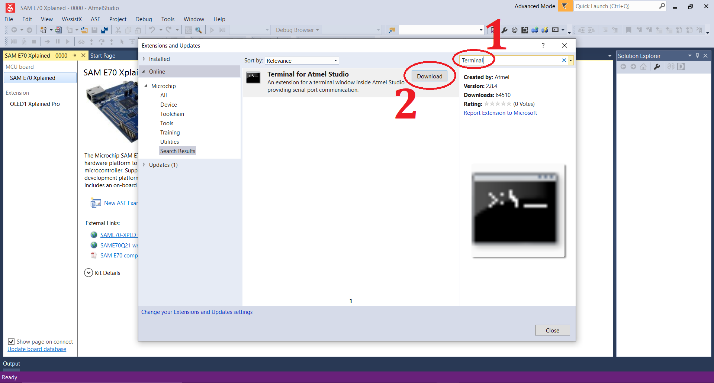
-
Após a instalação o Atmel Studio deverá reiniciar.
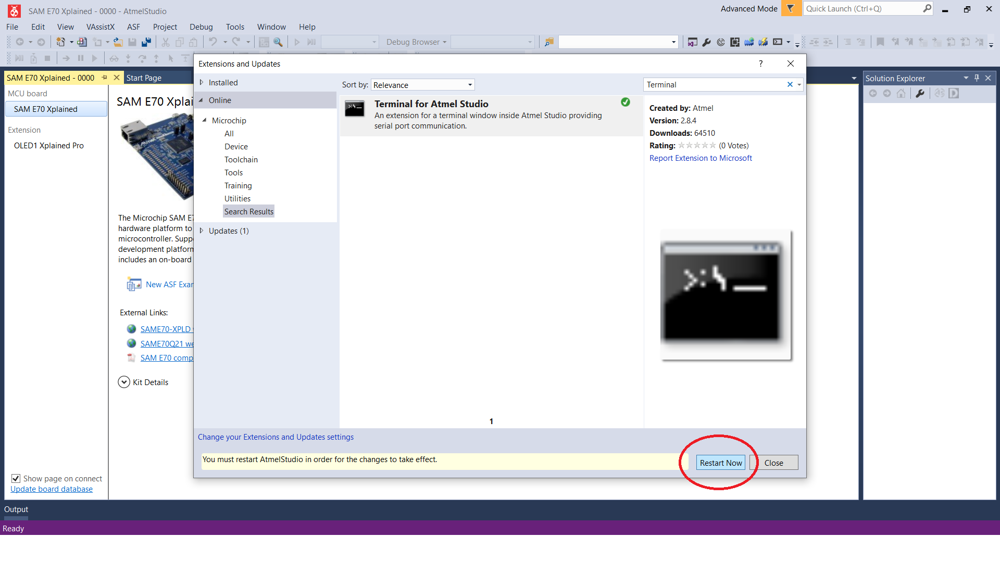
-
Para verificar se o Terminal Windows foi instalado, clique em View > Terminal Window
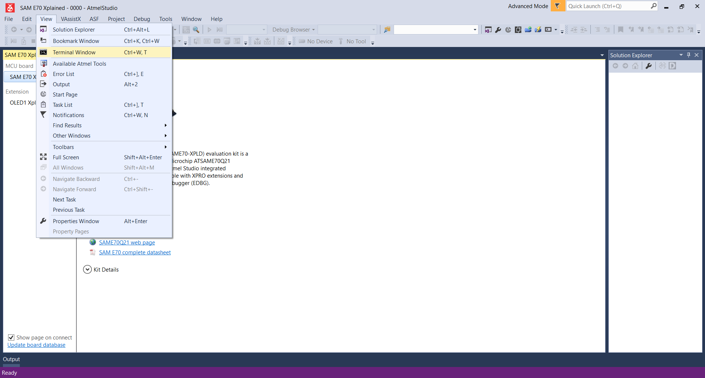
Caso não encontre o terminal em View Terminal Window (Imagem abaixo), você deve seguir os passos para instalação do mesmo.
Driver EDBG (USB) não está sendo reconhecido¶
Downgrade do driver EDBG
Faça o download do software Zadig:
-
Com a placa conectada, execute o software e selecione Options > List All Devices, feito isso selecione a opção EDBG Data Gateway ** e em seguida clique em **Downgrade Driver:
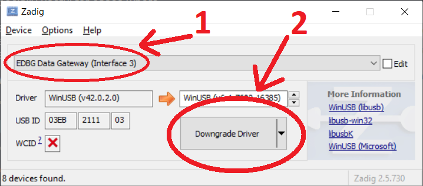
- O driver deverá ser reconhecido pelo Atmel Studio, conforme a imagem abaixo:
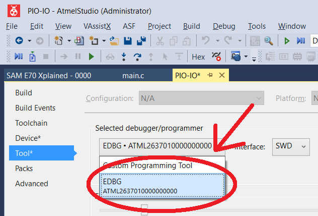
Abra qualquer um dos projetos da disciplina Computação Embarcada e conecte a placa, confira se o chip configurado na interface é o mesmo que você está utilizando, senão volte a sessão 2:
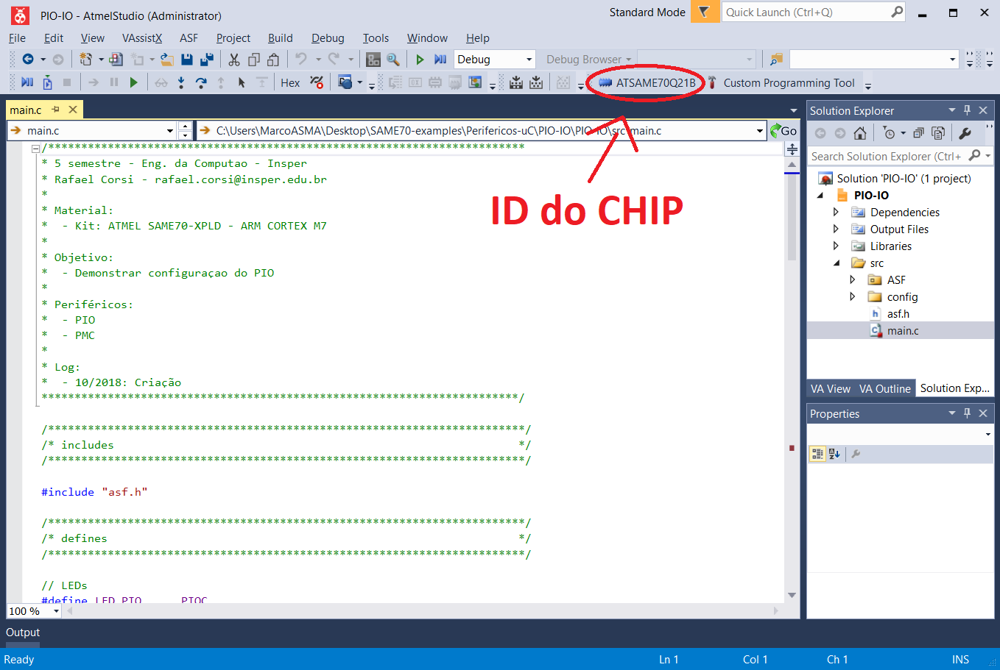
Caso o driver EDGB (gravador) não tenha sido reconhecido (imagem abaixo) será necessário fazer o Downgrade do driver EDBG:
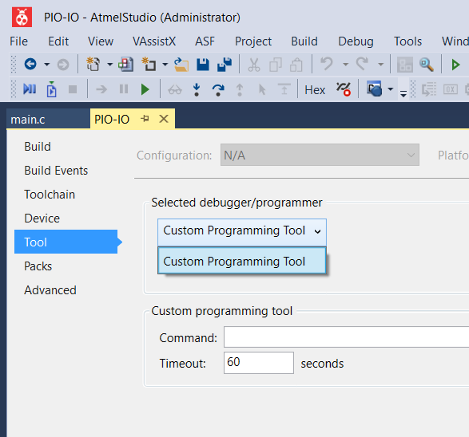